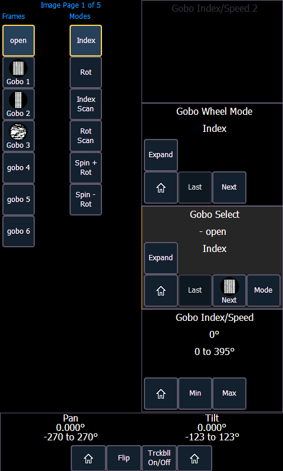

The encoder display area will show the name of the parameter it controls, display stepped limits (if any) and also a {Home} button which allows you to set that parameter to its default position. You can also home any parameter.
Some buttons that may be available on the touchscreen are:

Buttons like {Next} and {Last} are used to step through ranges (such as colors in a color scroller) one step at a time. {Min} and {Max} allow you to send a parameter to its minimum or maximum limit with one press.
Modes allows you to switch between modes of a parameter (if any exist); for example, a rotating gobo wheel. If additional modes are available, their softkeys will display near the top of the encoder display.
Encoders can be switched from course mode into fine by holding down [Shift] while using an encoder will put it in fine mode for as long as [Shift] is held down. Once [Shift] is released, the encoder will return to course mode. See Face Panel for encoder options.
Press {Expand} to see all of the information about any device with a frame table. Press again to collapse to the normal view. You may make selections from the Expand screen. The colors/images in the device are established in patch (see Using the Scroller/Wheel Picker and Editor ).
To the left of the encoder touchscreen are six hardkeys (five on Eos) that are for encoder control. From top to bottom, these encoder paging keys control intensity, focus, color, shutter, image, and form. Pressing any of these will change the parameters controlled by the encoders. To view other available encoder pages, simply press the encoder paging keys to advance the pages.
[Encoder Paging Keys] & [#] will take you directly to a page. [Flexi] & [Encoder Paging Keys] will toggle the flexi encoder states.
To post a parameter category to the command line, use the parameter category buttons.
To post beam to the command line, double press the shutter, image, or form parameter category buttons.
Some fixtures have more parameters than can be displayed on one encoder page. The number of. pages for each category is displayed at the top of the encoder touchscreen. To view the other pages, simply press the encoder paging button to advance the pages or hold the button and press a number key to go directly to the page you want to access.